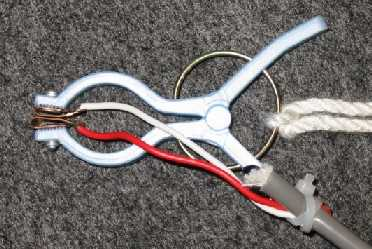
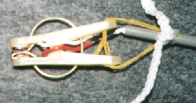
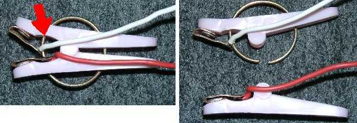
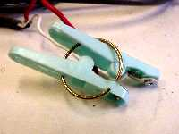

かならずお読みください→
月ヶ瀬離床センサに関する補足事項
ここでは月ヶ瀬離床センサを作り，使ってきた中で起こったことを順次記載しています．● 離床センサの設置／撤去作業について（０３／０２／１３）
設置や撤去作業は，ご本人がいないときにこっそり手早く実施することをお勧めします．
見慣れぬ男がベッド下でごそごそすると，不安になる方がおられます．
また作業をじっとみていた人は，原理を理解し，やがて作動させない方法を考案されました．この人は病気だ，理解力が低いなどと決めつけてかかると痛い目に遭います．
● 作り方に関連して．．
使用する洗濯バサミは小さなものがよいようだ．看護師さんがベッドの下に手を伸ばして作業するには，大きめの洗濯バサミが楽かと考え，写真のようなものも作ったが，これは配線が切れやすく，洗濯バサミ自体も壊れやすかった．小さい洗濯バサミは，丈夫なようだ．

洗濯バサミをつなぐ方法として，当初は上の写真のようにプラスチック部品の片方やバネにひもや配線を取り付けていた．この方法では，中央のジョイント部分に無理な力がかかり洗濯バサミが分解することがあった．そこで，下の写真のように二つのプラスチック部品の末端の穴にナイロン水糸で輪を作りこれに固定用のひもや配線を取り付けている．

電極材料としてはじめはアルミ板を使用していた．しかし１ヶ月ほどたつと，導通不良がよく発生した． 表面を磨けば回復するが，これではセンサとしての信頼性が保てないと考えた．材料を銅に変更してからこの問題は発生していない．
電極をプラスチックの洗濯バサミにつけるのにブラインドリベットを採用した．この理由は単に手元に道具一式が有ったからだ．（車いすの修理に使用）深い意味はない．接着剤など他の方法も考えられるだろう． ただし耐久性を考えるとブラインドリベットがよいみたいだ．
電極を洗濯バサミに付けてからハンダ付け作業をすると，洗濯バサミが熱で溶ける．もちろんオシャカだ．
ハンダ付け部分を絶縁するのは当然としても，そのほかの配線はむき出しの方がよい．線が切れていれば誰が見てもこわれたことわかるからだ．こわれた道具を知らずに使い続けるのは何より危険だと考える．
同様に洗濯バサミを使うのはよい．洗濯バサミがよくこわれることは誰でも知っている．貧弱な外見は，過剰な信頼を未然に防いでくれる．ある意味で道具と人間の緊張感を維持することが出来る．一般に機械ものが苦手と言われる看護師さんにも受け入れられやすかった．仕組みや原理が見てわかる道具には，このような利点もあることを知った．
● 使い方に関連して．．
『使い方』で紹介した使い方の例は，まだほんの一部と思う．新しい方が新しい問題を教えてくれるたびに，さらに工夫の余地が広がるように感じている．
入院さえる方やそのご家族に説明するときも，貧弱な外見は役に立った．得体の知れない機械に対する不信感は，この場合ほとんどない．
ベッド柵をまたごうとする人には，柵の高さに水平にひもを張って月ヶ瀬離床センサをつける方法を考えていた．しかしひもを完全にまたぎ越したら感知できないし，それ以前にひもをまたぎ越そうとする動作やポーズ自体がかなり危険と思われる．また柵と違い，ひもではとっさの時につかまり身体を支えることもできない． 『使い方』で紹介した，歩行器に月ヶ瀬離床センサをつけ，バリケードとして置く方法は，一応うまくいっている．これなどは，歩行器をいつも使うように指導した看護関係者の努力なしには成果を収めることが出来ない例だと考える．
通路にひもを張り，そこを横切るときに感知する使い方は，当院ではあまりうまく使えていない．歩行能力評価では，すり足歩きしかできない人まで，ひもをまたいだりした．（しているADLは，時として，できるADLを上回る） ひもを高く張るとさらに足を上げようとする．こうなると安全のための道具なのか，危険を呼ぶ道具なのかわからなくなる．マニュアルも大事だが，目の前に起きていることに対する安全意識がある程度高くないと，この道具は生きてこないと考える．やはり道具は使いようなのだ．
● 破損例
洗濯バサミの破損例

上の写真の赤矢印部分が破損している．この場合，バネが電極間を短絡したためナースコールが鳴りやまなくなり，洗濯バサミも閉じなくなったため，現場ですぐ故障と判断され交換された．このように誰が見てもわかるこわれかたは，この場合好ましい．
洗濯バサミの破損例

洗濯バサミのジョイント部分が破損し，ものをはさめなくなった．
● その他
どのような道具でも，出来ることならば，永遠にこわれないことがもちろん望ましい．しかしこと安全に関して絶対はありえないと考えるのが正しいと思う．もしこの道具が３年間こわれなかったら，職場に入って間もない人はこう言うかも知れない．
「まさかこわれるとは思わなかった」
大事に至らない範囲で，時々こわれる機械が望ましいのだろうか？大変むつかしい問題だ．
03/05/15 公開